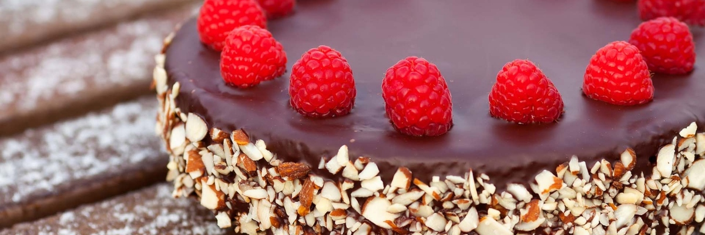

05 Jan
This fluffy vanilla cake recipe is the absolute best yellow cake from scratch and paired with the silky smooth chocolate frosting, you can't beat it for a classic birthday cake or any other celebration!
07 Jan
Last week flew by and before I knew it, it was time to plan the menu for Sunday dinner. Sundays have been a perfect opportunity for me to experiment with new desserts recipes, especially those that serve tons of people, since we have helped polishing it all off and don't have it sitting around the house, tempting us for days.
01 Feb
If you're looking for a perfect cream cheese pound cake recipe that turns out buttery, moist, and dense each and every time, add this year-round crowd-pleaser to your list! Unsing only 7 simple ingredients, this easy cream cheese pound cake will quickly become your favourite; serve plain with s sprinkle of powdered sugar or offer homemade whipped cream and berries, or a drizzel of salted caramel or fudge sauce.

12 Feb
I have a long associated German Chocolate Cake with Father's Day, although I'm not entirely sure why. I think I remember my mom making it for my dad once or twice growing up (although never on Father's Day, ironically) and the correlation must have stuck somewhere along the way.